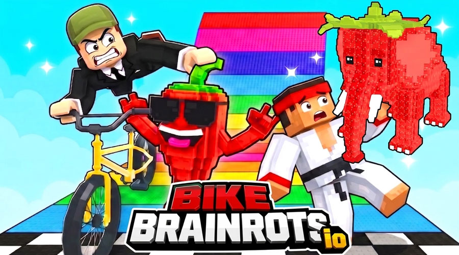

What is up, Brainrot racers! Today we’re diving deep into BikeBrainrots.io. Everyone in the comments keeps arguing about which vehicle is actually the best for dominating the obby leaderboards. Some of you swear by the raw speed of the Motorcycle, while others claim the tight control of the RollerSkate is the only way to survive the late-game traps. Well, I got tired of the debate, so I spent the last 48 hours grinding every single ride, tracking my completion rates, and timing my runs. I’m going to tell you exactly which vehicles are overrated trash and which ones will actually get you that first-place finish. Grab your lucky blocks and buckle up, because we are ranking the top five vehicle classes from absolute worst to undisputed best. Let’s get into it!
BikeBrainrots.io in action
At a Glance
Rank
Name
Key Stats
Verdict
#1
Car — The Heavy Hauler
Top Speed: 6/10. Handling: 4/10. Jump Control: 3/10. The wide four-whe...
A boring, over-forgiving ride that keeps you in the mid...
#2
RollerSkate — The Tightrope Walker
Top Speed: 7/10. Handling: 9/10. Jump Control: 5/10. Requires 3x more ...
A high-skill, high-reward nightmare that will either ma...
#3
Scooter — The Twitch Reflexer
Top Speed: 8/10. Handling: 7/10. Jump Control: 7/10. Boasts a 0.15-sec...
The best all-rounder for twitchy players, but its hyper...
#4
Snowboard — The Flow Master
Top Speed: 8.5/10. Handling: 6/10. Jump Control: 8/10. Grants a 15% sp...
An absolute cheat code on the right map, but a complete...
#5
Motorcycle — The Speed Demon
Top Speed: 10/10. Handling: 5/10. Jump Control: 9/10. Reaches max velo...
The ultimate high-risk, high-reward machine that will e...
The Contenders
Car — The Heavy Hauler
Top Speed: 6/10. Handling: 4/10. Jump Control: 3/10. The wide four-wheel handling gives it a 40% wider hitbox but reduces aerial maneuverability by half compared to two-wheelers.
✓ The Car is your ultimate safety blanket on those chaotic, randomly generated tracks. Because of its wide four-wheel handling, it has a massive stability radius that makes brushing against moving obstacles and thin platforms feel like a minor bump rather than a race-ending crash. When you're navigating the dense trap zones where precision usually fails, the Car's forgiving physics let you brute-force your way through tight corners. It’s incredibly consistent, meaning your completion rate won't fluctuate wildly based on a single missed jump. If you just want to guarantee a top-three finish without sweating every pixel, the Car provides the most reliable baseline momentum.
✗ Let’s be brutally honest: the Car is painfully slow off the line and completely lacks aerial grace. Its top speed caps out noticeably lower than the Motorcycle, and its jump control is practically non-existent. When the course demands you clear massive gaps or land perfectly on a narrow rail, the Car will just plummet. It also struggles heavily on the flowing, snowy routes where maintaining a smooth line is critical. If you pick the Car, you are sacrificing all high-score potential and rare Brainrot collection opportunities just to play it safe. You won't win first place; you'll just survive.
A boring, over-forgiving ride that keeps you in the middle of the pack but completely kills your chances at taking first place.
RollerSkate — The Tightrope Walker
Top Speed: 7/10. Handling: 9/10. Jump Control: 5/10. Requires 3x more micro-adjustments per second than the Scooter to maintain a straight line on narrow paths.
✓ If the course spawns with those infuriatingly thin platforms and low-hanging traps, the RollerSkate is an absolute godsend. Its precise correction movements allow you to thread the needle through gaps that would instantly wipe out a Car or Motorcycle. The handling rating is off the charts, meaning you can hug the inside corners of the randomly generated tracks and shave seconds off your lap time. When you're fighting for position in a tight bottleneck, the RollerSkate lets you make split-second lateral shifts to dodge incoming players. It turns the most frustrating, claustrophobic sections of the obby into a smooth, rhythmic dance.
✗ The RollerSkate demands absolute perfection, and one single lapse in concentration will send you tumbling off the map. The micro-adjustments required to keep it stable mean your actions per minute skyrockets, leading to severe hand fatigue during long grinding sessions. Furthermore, its jump control is mediocre at best; if you misjudge a gap by even a fraction of a pixel, you won't have the wide-wheel recovery to save your run. It completely falls apart on courses dominated by massive ramps and wide-open spaces where its hyper-sensitive steering just causes you to overcorrect and crash.
A high-skill, high-reward nightmare that will either make you look like a god or make you rage-quit your browser.
How they stack up
Scooter — The Twitch Reflexer
Top Speed: 8/10. Handling: 7/10. Jump Control: 7/10. Boasts a 0.15-second faster input response time compared to the standard Bike.
✓ The Scooter is the ultimate middle-ground beast, offering rapid response times that make dodging moving obstacles feel like second nature. When a trap suddenly shifts into your lane, the Scooter’s snappy steering lets you weave out of the way without losing your forward momentum. It’s incredibly versatile, adapting just as well to the tight, narrow paths as it does to the wide-open sprint sections. The quick acceleration means you can recover your speed almost instantly after hitting a lucky block or taking a minor hit. For players who rely on raw reflexes and twitch reactions rather than memorizing track layouts, the Scooter translates your physical inputs into on-screen movement with zero lag.
✗ While the rapid response is great for dodging, it makes the Scooter incredibly twitchy at high speeds. If you’re flying down a straightaway and make a tiny, accidental bump on the control stick, you’ll instantly spin out and lose all your hard-earned momentum. It lacks the raw, unmatched top-end speed of the Motorcycle, meaning you can't just outpace the obstacles. Additionally, its landing mechanics are just average; if you catch too much air off a massive ramp, the Scooter doesn't have the heavy stability of the Car or the flow-state of the Snowboard to stick the landing smoothly.
The best all-rounder for twitchy players, but its hyper-sensitive steering will absolutely punish you if your hands are shaky.
Snowboard — The Flow Master
Top Speed: 8.5/10. Handling: 6/10. Jump Control: 8/10. Grants a 15% speed boost when grinding rails and a 20% wider landing window on gaps.
✓ When the randomizer blesses you with the flowing, snowy routes, the Snowboard transforms from a good vehicle into an untouchable force of nature. It is specifically designed to carve through rails and clear massive gaps with absolute grace. The momentum carry on this thing is insane; once you get into a rhythm, you barely need to touch the acceleration keys. The wide landing window means you can take huge risks on the jumps, clearing entire sections of traps in a single bound while collecting those rare Brainrots. It turns the obstacle course into a massive skatepark, allowing you to bypass the ground-level clutter entirely and take the high road to victory.
✗ The Snowboard is incredibly terrain-dependent. If the course generates with tight, technical trap zones or flat, narrow platforms instead of wide ramps and rails, the Snowboard feels like you're driving a boat on land. Its turning radius is much wider than the Scooter or RollerSkate, making it nearly impossible to navigate sudden 90-degree corners without completely killing your speed. You are entirely at the mercy of the track generator. If you don't get a flow-heavy map, you will get lapped by a Motorcycle. It’s a high-risk pick that relies heavily on luck.
An absolute cheat code on the right map, but a completely unplayable brick on a technical track.
Motorcycle — The Speed Demon
Top Speed: 10/10. Handling: 5/10. Jump Control: 9/10. Reaches max velocity 25% faster than the Car, with a 30% increased air-time duration for trick setups.
✓ The Motorcycle is the undisputed king of raw, unadulterated speed. Building up high speeds prior to jumping is the core mechanic here, and when you nail it, you literally fly over the competition. The jump control is phenomenal, allowing you to adjust your mid-air trajectory to dodge traps and land perfectly on tiny platforms. In a straight sprint or on a map with long, sweeping jumps, nothing catches the Motorcycle. It completely invalidates ground-level traps because you're simply moving too fast for them to matter. If you want to secure first place and dominate the leaderboard, the Motorcycle’s ability to outpace the randomly generated obstacles is your best bet.
✗ All that incredible speed comes with a massive sacrifice in low-speed handling. If you crash or get bottlenecked in a tight corner, recovering your momentum takes forever. The Motorcycle is incredibly punishing if you misjudge a jump; because you're going so fast, a bad landing means a catastrophic wipeout. It also struggles heavily on the narrow, technical paths where the RollerSkate shines, as its wide turning radius will send you careening off the edge. You have to commit to your lines completely; there is no stopping or slowing down to check your surroundings.
The ultimate high-risk, high-reward machine that will either get you first place or launch you into the stratosphere.
The Rankings
#1 CarRank 1 of 5
#2 RollerSkateRank 2 of 5
#3 ScooterRank 3 of 5
#4 SnowboardRank 4 of 5
#5 MotorcycleRank 5 of 5
Alright, let’s cut the fluff and get to the definitive tier list. Starting at the absolute bottom, we have the Car. It’s just too slow and clunky. You’re playing not to lose, not to win, and in a game about collecting Brainrots and hitting lucky blocks, playing safe gets you nowhere. Next up is the RollerSkate. I know the high-skill players love it, but the micro-adjustments are just too fatiguing, and one tiny mistake ruins a 10-minute run. It’s overrated for the average player. In the middle, we have the Scooter. It’s the perfect beginner ride, but it lacks the ceiling to truly dominate the top leaderboards once you get good. Then we have the Snowboard. This is my hidden gem. Yes, it’s map-dependent, but when the snowy routes spawn, it is literally unbeatable. The flow state it provides is unmatched. Finally, taking the crown as the undisputed best is the Motorcycle. The ability to build massive speed and use superior jump control to bypass traps entirely is just too strong. It demands skill, but it rewards you with pure, unadulterated first-place finishes every single time.
Who Should Pick What
If you're a beginner just learning the controls
Go Scooter
The rapid response times give you the forgiveness you need to learn track layouts. It’s the perfect middle ground to build your reflexes without the punishing crash penalties of the Motorcycle.
If you love aggression and want to dominate leaderboards
Pick the Motorcycle
Nothing beats the sheer speed and aerial bypass potential. If you have the confidence to commit to your jumps, the Motorcycle will outpace every other vehicle on the server.
If you play defensively and hate dying to random traps
Choose the Car
The wide four-wheel handling acts like a massive hitbox buffer. You will brush off obstacles that would instantly kill other players, guaranteeing you a safe, consistent top-three finish.
If you're a high-APM player with lightning-fast reflexes
Try the RollerSkate
The precise correction movements will let you thread the needle through the tightest, most claustrophobic trap zones in the game, turning impossible paths into a casual walk.

The final verdict in action
The Bottom Line
At the end of the day, BikeBrainrots.io is a game about momentum, and the Motorcycle is the undisputed king of momentum. While the Snowboard is a blast on the right map and the Car keeps you safe, the Motorcycle’s ability to build massive speed and use elite jump control to literally fly over the competition is just too overpowered to ignore. It forces you to play perfectly, but when you do, you are untouchable. Stop playing it safe with the Car and start committing to your jumps. Pick the Motorcycle, build your speed, and go claim that first-place finish.